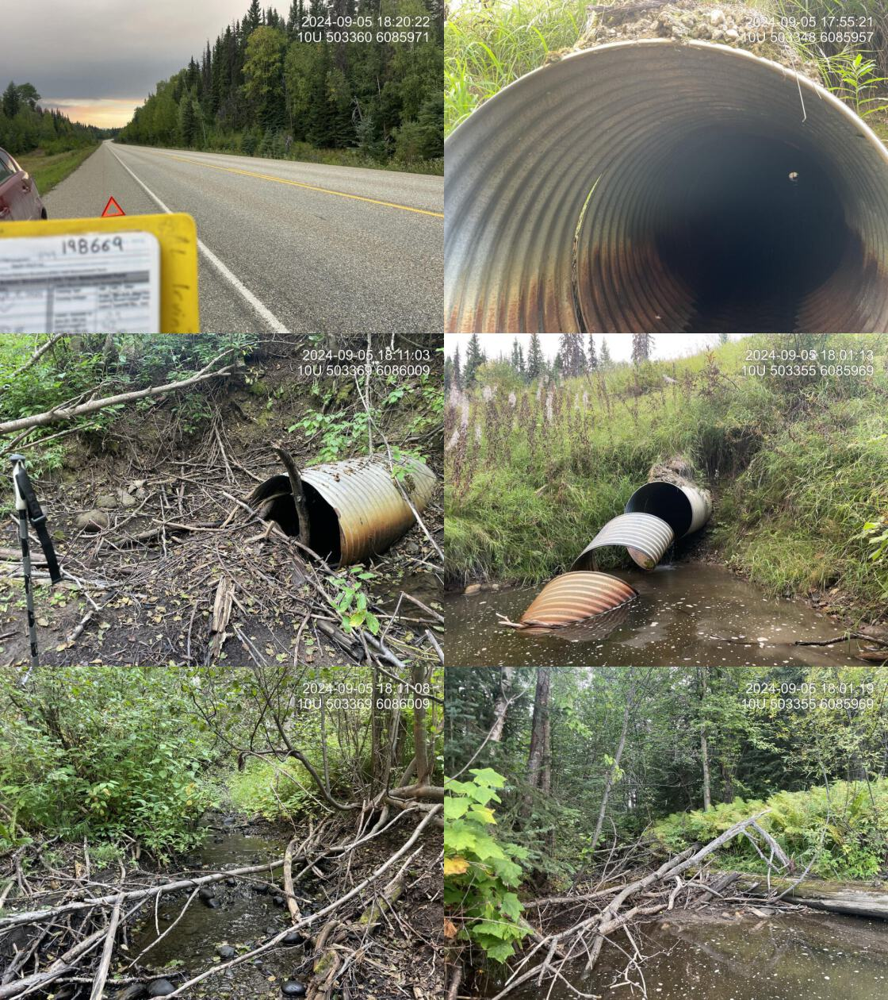

Tributary to McLeod Lake - 198669 - Appendix
Site Location
PSCIS crossings 198669 is located on Tributary to McLeod Lake, approximately 13km south of the community of McLeod Lake, BC. The crossing is located 250m upstream of McLeod Lake, on the Hart Highway, and is within the Carp River watershed group. Crossing 198669 is the responsibility of the Ministry of Transportation and Infrastructure (chris_culvert_id: 1996861).
Background
At this location, Tributary to McLeod Lake is a third order stream and drains a watershed of approximately 6.8km2. The watershed ranges in elevation from a maximum of 1004m to 682m near the crossing (Table 4.11).
In 2023, crossing 198669 was assessed with a fish passage assessment and was prioritized for follow-up with a habitat confirmation assessment due to the extremely poor condition and size of the culvert, and the presence of quality habitat observed upstream (Irvine and Winterscheidt 2024). Upstream of the highway, rainbow trout have previously been recorded (Norris [2018] 2024; MoE 2024a).
fpr::fpr_table_wshd_sum(site_id = my_site) |>
fpr::fpr_kable(caption_text = paste0('Summary of derived upstream watershed statistics for PSCIS crossing ', my_site, '.'),
footnote_text = 'Elev P60 = Elevation at which 60% of the watershed area is above',
scroll = F)| Site | Area Km | Elev Site | Elev Min | Elev Max | Elev Median | Elev P60 | Aspect |
|---|---|---|---|---|---|---|---|
| 198669 | 6.8 | 682 | 682 | 1004 | 867 | 843 | SSW |
| * Elev P60 = Elevation at which 60% of the watershed area is above |
A summary of habitat modelling outputs for the crossing are presented in Table 4.12. A map of the watershed is provided in map attachment 093J.123.
| Habitat | Potential | Remediation Gain | Remediation Gain (%) |
|---|---|---|---|
| BT Rearing (km) | 4.9 | 2.1 | 43 |
| BT Spawning (km) | 3.4 | 2.1 | 62 |
| BT Network (km) | 14.5 | 3.9 | 27 |
| BT Stream (km) | 13.3 | 3.9 | 29 |
| BT Lake Reservoir (ha) | 2.3 | 0.0 | 0 |
| BT Wetland (ha) | 4.2 | 0.0 | 0 |
| BT Slopeclass03 (km) | 1.8 | 0.5 | 28 |
| BT Slopeclass05 (km) | 4.7 | 2.1 | 45 |
| BT Slopeclass08 (km) | 3.8 | 1.2 | 32 |
| BT Slopeclass15 (km) | 3.2 | 0.1 | 3 |
| * Model data is preliminary and subject to adjustments. |
Stream Characteristics at Crossing 198669
At the time of the 2024 assessment, PSCIS crossing 198669 on the Hart Highway was un-embedded, non-backwatered and ranked as a barrier to upstream fish passage according to the provincial protocols (MoE 2011) (Table 4.13). The culvert had a 0.36m outlet drop, a 1m deep outlet pool, and was in extremely poor condition with approximately 2m of the culvert unraveling at the outlet. There were signs of significant erosion around the pipe inlet, suggesting the culvert is undersized for the stream.
The water temperature was 11\(^\circ\)C, pH was 8.3 and conductivity was 430 uS/cm.
| Location and Stream Data |
|
Crossing Characteristics | – |
|---|---|---|---|
| Date | 2024-09-05 | Crossing Sub Type | Round Culvert |
| PSCIS ID | 198669 | Diameter (m) | 0.9 |
| External ID | – | Length (m) | 42 |
| Crew | LS AI | Embedded | No |
| UTM Zone | 10 | Depth Embedded (m) | – |
| Easting | 503347 | Resemble Channel | No |
| Northing | 6085960 | Backwatered | No |
| Stream | Tributary to McLeod Lake | Percent Backwatered | – |
| Road | Hart Highway | Fill Depth (m) | 8 |
| Road Tenure | MoTi | Outlet Drop (m) | 0.36 |
| Channel Width (m) | 3.5 | Outlet Pool Depth (m) | 1 |
| Stream Slope (%) | 2 | Inlet Drop | Yes |
| Beaver Activity | No | Slope (%) | 2 |
| Habitat Value | Medium | Valley Fill | Deep Fill |
| Final score | 37 | Barrier Result | Barrier |
| Fix type | Replace Structure with Streambed Simulation CBS | Fix Span / Diameter | 4.5 |
| Photos: From top left clockwise: Road/Site Card, Barrel, Outlet, Downstream, Upstream, Inlet. | |||
| Comments: The culvert is completely broken in half at the outlet. Fish were observed downstream, and rainbow trout are documented upstream in FISS. Good habitat consisting of pools and gravels were observed downstream. A substantial amount of road fill is present. The inlet was blocked by a log and debris creating an inlet drop. There were signs of significant erosion around the pipe inlet, suggesting the culvert is undersized for the stream. MoTi chris_culvert_id: 1996861. 17:51:46 |
Stream Characteristics Downstream of Crossing 198669
The stream was surveyed downstream from crossing 198669 for 250m , to the confluence with McLeod Lake. The stream had frequent pools, good cover, and abundant gravels, providing medium value habitat for overwintering and spawning fish. Beaver activity was visible and fish were observed the entire length of the survey (Figure 4.5). The dominant substrate was cobbles with gravels sub-dominant.Total cover amount was rated as abundant with undercut banks dominant. Cover was also present as small woody debris, large woody debris, deep pools, and overhanging vegetation.The average channel width was 3.4m, the average wetted width was 1.5m, and the average gradient was 1.6%.
Stream Characteristics Upstream of Crossing 198669
The stream was surveyed upstream from crossing 198669 for 550m (Figure 4.6). Abundant gravels were present throughout the lower section, providing suitable spawning habitat. Near the powerline corridor, substrate composition transitioned to predominantly fines. Approximately 100m upstream of the transmission line, a 1.2m high beaver dam created a backwatered area. Numerous fish, ranging from 40-120mm, were observed throughout the surveyed section up to the beaver dam. Upstream of the impounded area, the stream returned to predominantly gravel substrates with frequent pools up to 40cm deep. The dominant substrate was gravels with fines sub-dominant.The average channel width was 3.7m, the average wetted width was 2.4m, and the average gradient was 2.5%.Total cover amount was rated as moderate with undercut banks dominant. Cover was also present as small woody debris, large woody debris, deep pools, and overhanging vegetation. The habitat was rated as medium value for salmonid spawning and rearing.
Structure Remediation and Cost Estimate
Should restoration/maintenance activities proceed, replacement of the Hart Highway crossing with a bridge (4.5 m span) is recommended. At the time of reporting in 2025, the cost of the work is estimated at $ 1,500,000.
Conclusion
Approximately 5km of bull trout rearing habitat is modelled upstream, and the habitat was rated as medium value for anadromous spawning and rearing. The culvert was in extremely poor condition, with a deep outlet pool and significant erosion around the pipe inlet, indicating that the culvert is severely undersized for the stream. The 0.36m outlet drop likely inhibits juvenile fish passage. The crossing is a moderate priority for replacement. Due to this crossing being situated on the Hart Highway, construction would be complex and costly.
tab_hab_summary |>
dplyr::filter(Site %in% c(my_site)) |>
fpr::fpr_kable(caption_text = paste0("Summary of habitat details for PSCIS crossings ", my_site, "."),
scroll = F) | Site | Location | Length Surveyed (m) | Average Channel Width (m) | Average Wetted Width (m) | Average Pool Depth (m) | Average Gradient (%) | Total Cover | Habitat Value |
|---|---|---|---|---|---|---|---|---|
| 198669 | Downstream | 250 | 3.4 | 1.5 | 0.3 | 1.6 | abundant | medium |
| 198669 | Upstream | 550 | 3.7 | 2.4 | 0.4 | 2.5 | moderate | medium |
my_photo1 = fpr::fpr_photo_pull_by_str(str_to_pull = 'ds_typical_1_')
my_caption1 = paste0('Typical habitat downstream of PSCIS crossing ', my_site, '.')Figure 4.5: Typical habitat downstream of PSCIS crossing 198669.
my_photo2 = fpr::fpr_photo_pull_by_str(str_to_pull = 'us_typical_2')
my_caption2 = paste0('Typical habitat upstream of PSCIS crossing ', my_site, '.')Figure 4.6: Typical habitat upstream of PSCIS crossing 198669.
my_caption <- paste0('Left: ', my_caption1, ' Right: ', my_caption2)
knitr::include_graphics(my_photo1)
knitr::include_graphics("fig/pixel.png")
knitr::include_graphics(my_photo2)